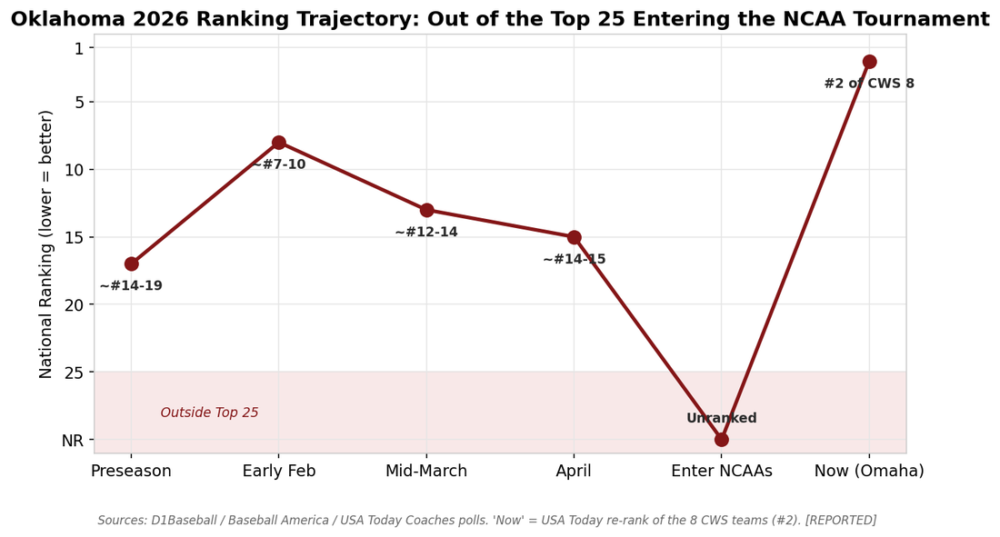
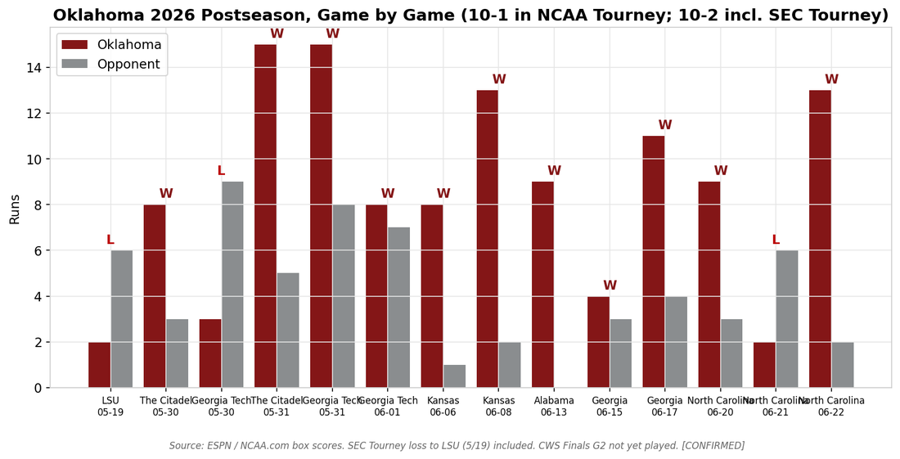
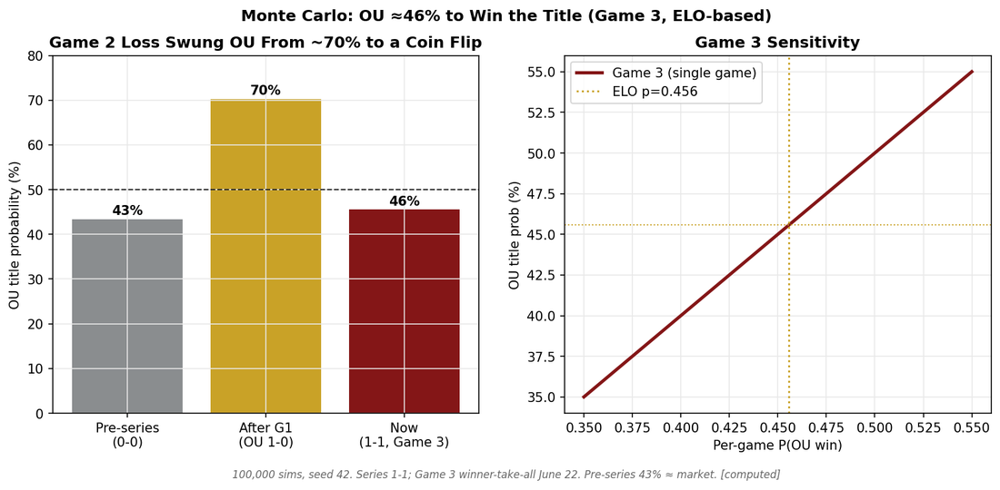
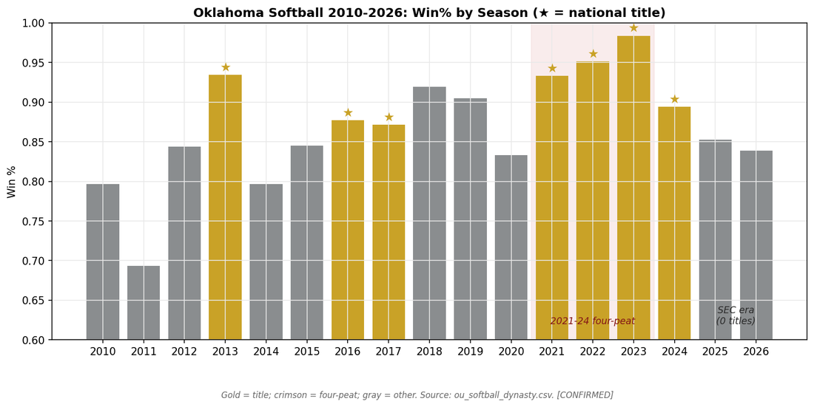
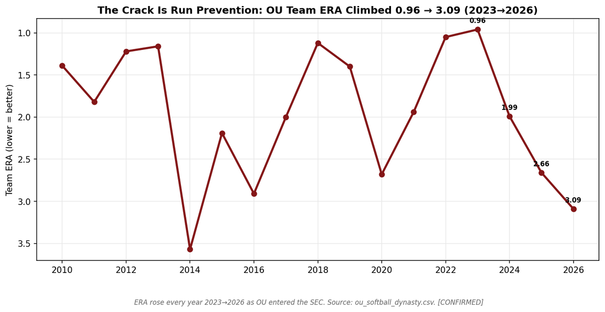
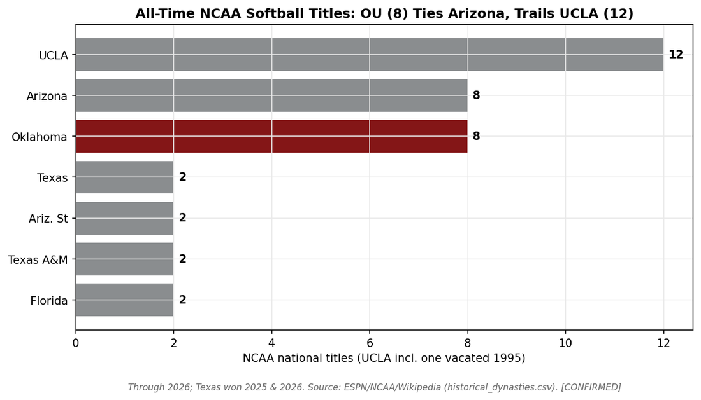
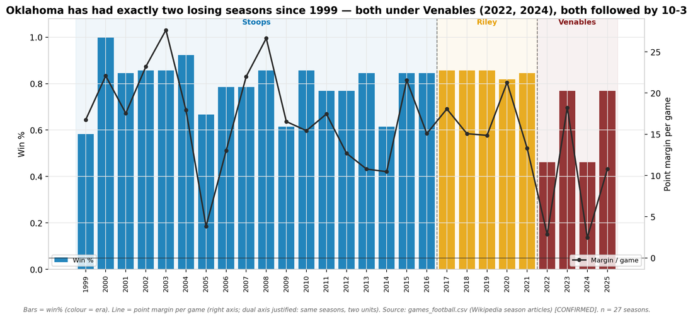
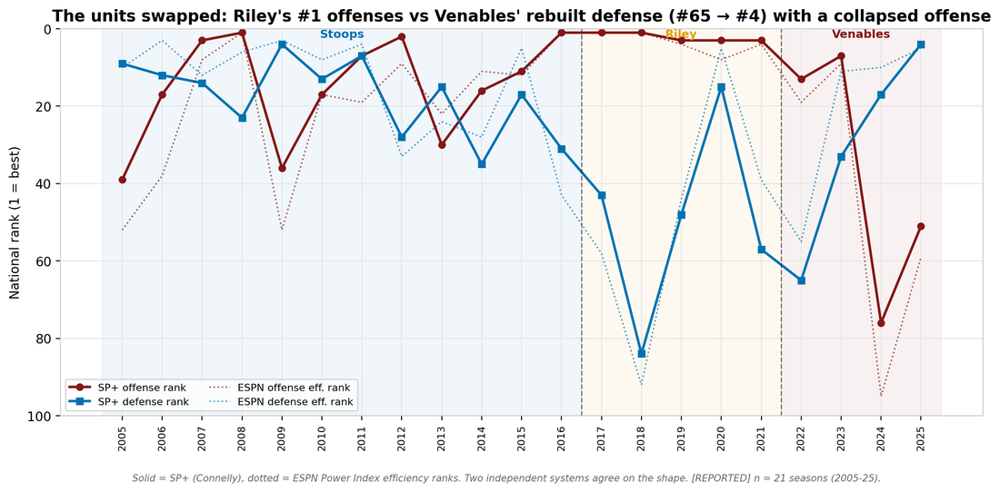
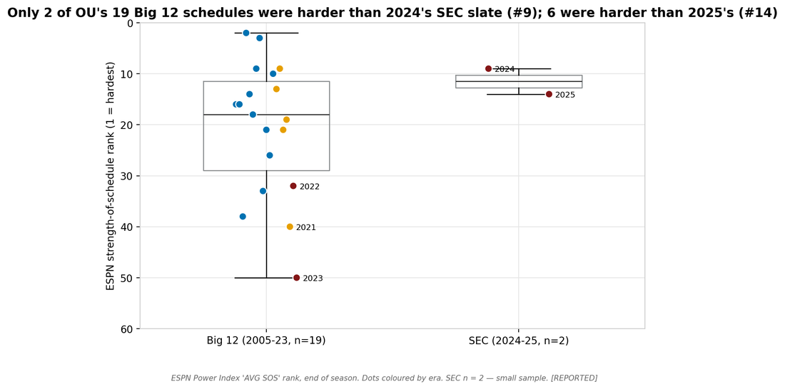

The data shows a modern athletics dynasty built on baseball, softball, gymnastics, and other Olympic sports — capped by a 2026 national title almost no model saw coming.
make all).Each dot is a national championship. Filter by sport, era, or title type; hover for the story. The faint connectors mark dynasty streaks — consecutive titles in the same sport.
Source: championships/data/ou_all_championships.csv. Football titles are poll/selector-based (AP / Coaches / BCS), not NCAA-administered; only 2000 is undisputed. 1977 men's gymnastics and 2014 women's gymnastics are shared titles.
Oklahoma finished 14–16 in the SEC (11th place), unranked and unseeded — then won the national championship, going 43–23 overall and beating the No. 2, No. 7, and No. 3 national seeds on the way to a 13–2 Game 3 title win over North Carolina.
The record was a mask: OU played the No. 2 strength of schedule in the country, a .391 team OBP, and a postseason power surge (home-run rate roughly doubled). The thesis was never "lucky" — it was "underrated."
The honest part: before Game 3, the project's own model made OU a slight underdog (~46%). OU won anyway. We logged that as a miss rather than quietly deleting it — a well-calibrated 46% is supposed to win ~46% of the time, and the title is exactly the high-variance outcome the survivorship model says the regular season can't predict. The miss is the point: it shows the numbers weren't reverse-engineered to look smart.



From 2021–2024 Oklahoma won four straight national titles — the first softball four-peat in Division I history — going a combined 235–15 with a sub-1.50 ERA. Across 2010–2026 it won 8 titles and reached 13 Women's College World Series.
But "greatest peak" is not "greatest program": by career résumé, UCLA still leads in total titles and WCWS appearances. And the dynasty has cracked — OU did not win 2025 or 2026 (Texas won both), and in 2026 it missed the WCWS entirely.
The data points to a specific cause: run prevention. Team ERA climbed from 0.96 (2023) to 3.09 (2026) even as the 2026 offense set program highs — the bats stayed elite; the pitching slipped.



Three eras, 356 games: Stoops 190–48, Riley 56–10, Venables 32–20. OU's only two losing seasons since 1999 are 2022 and 2024 — and both were followed by 10–3.
The coach changed the shape of the team more than its ceiling. Riley fielded #1, #1, #3, #3, #3 SP+ offenses over defenses ranked #43, #84, #48, #15, #57 — four of five at #43 or worse; Venables rebuilt the defense #65 → #4 while the offense fell to #76 (2024) and #51 (2025). Two independent rating systems agree on the shape.
The SEC move made the schedule much harder (strength-of-schedule rank #41 → #12), but explains only ~40% of the margin drop (estimated, and only two SEC seasons so far); the rest was a real 2024 collapse that 2025 reversed (SP+ #14, 5–2 vs ranked teams, a CFP berth). Recruiting rank explains almost nothing inside OU's #3–#19 band. And luck? +6.3 wins for Riley's teams, about +1.3 a season (20–7 in one-score games), −3.0 for Venables' (9–10, and 0–4 in bowls and the playoff). Estimated from confirmed scores.
Built in documented fallback mode — no CollegeFootballData key — so box-score drivers are marked NOT AVAILABLE rather than estimated. Source: football/ module, validator + offline tests.



The 2026 events post-date the analyst model's training cutoff, so 100% of the data was gathered live and held to a strict integrity standard. The build, not just the charts, is the deliverable.
Every figure pulled from live sources (ESPN/NCAA box scores, official sheets), not model memory; the championship was confirmed via ESPN's data API the moment it went final.
Every cell carries CONFIRMED / REPORTED / ESTIMATED / NOT_FOUND so readers see exactly how solid each number is.
Schema-aware validators on every CSV (columns, rows, provenance) plus cross-foot checks (the 47 titles reconcile to 40 + 7 three independent ways).
make all regenerates every chart and a checksummed manifest byte-identically; CI runs the validators on every push.
A living log records conflicts found and how each was resolved (e.g., a one-run record corrected 6-4 → 11-3; a pitcher misattribution caught and fixed).
Falsifiable predictions are recorded with outcomes — including the Game-3 miss — so the work can be scored honestly after the fact.
Advanced stats that don't exist for college baseball (wOBA/FIP/exit velo) are labeled NOT AVAILABLE rather than invented; the unannounced MVP is marked pending.
Stdlib-plus-pandas Python, fixed seeds, one-command rebuild; anyone can re-run the analysis end to end.
Four self-contained modules (baseball, softball, all-sports championships, social) share one integrity standard and one build.
A dozen of the project's strongest visuals. All are regenerated deterministically from tagged datasets.
Evidence-first, fan-aware, and transparent about the prediction miss. Click to expand; use the copy button.
A reproducible, evidence-first data investigation into Oklahoma athletics: 47 national titles across 7 sports, the 2026 baseball championship, and the softball dynasty — every figure source-cited, nothing fabricated, one-command rebuild.
Oklahoma is, by trophy count, an Olympic-sport dynasty more than a football school: 47 claimed national championships, 79% of them outside football and baseball. This repo gathers the public data behind that record — including OU's 2026 College World Series title — builds a tagged, validated dataset and chart suite, and answers, with evidence, what's sustainable vs. variance. Verification-first, confidence-tagged, deterministic builds, no invented numbers (including an honestly logged prediction miss).
I built an end-to-end sports-data project around a question I couldn't answer from memory: why did a 14–16 (in conference) Oklahoma team win the 2026 College World Series? Because the events post-date my model's training cutoff, 100% of the data had to be gathered live and verified. So I treated it like a real analytics engagement: • every figure tagged CONFIRMED / REPORTED / ESTIMATED / NOT_FOUND • schema validation + cross-foot checks on every dataset • deterministic, one-command rebuild (make all) + CI • a prediction ledger — including a Game-3 forecast that MISSED (the model had OU as a slight underdog; OU won). I kept the miss in. A calibrated 46% is supposed to win sometimes, and leaving it visible is the honest move. Findings: OU is really an Olympic-sport dynasty (47 national titles, 79% outside football); its softball run is the greatest peak but not the greatest program; and the 2026 baseball title was an underdog story that the data says was underrated, not lucky. Repo + writeup below. Feedback from analysts and college-baseball folks welcome.
1/ Oklahoma just won the 2026 College World Series at 14–16 in the SEC. I built a reproducible data project to ask: fluke, or underrated? Thread 🧵 2/ Underrated. OU had the #2 strength of schedule in the country, a .391 team OBP, and a postseason power surge. The record was a mask — it was a top-15-caliber team wearing a bubble team's reputation. 3/ The honest part: before Game 3 my own model made OU a ~46% underdog. OU won 13–2. I logged it as a MISS. A calibrated 46% is supposed to win ~46% of the time — hiding it would be the dishonest move. 4/ Zoom out and OU isn't a football school at all. 47 national titles, and 79% are in Olympic/non-revenue sports — gymnastics, softball, wrestling, golf. 5/ Softball: the first-ever D1 four-peat (2021–24, 235–15). Greatest peak in the sport — but UCLA still leads all-time, and Texas has taken the last two. Peak ≠ program. 6/ Everything is source-cited, confidence-tagged, validated, and rebuilds with one command. Interactive title wall + full writeup here: [link]
[OC] I built a reproducible data project on Oklahoma's 2026 title run (and OU's whole championship history) After OU won it all at 14–16 in the SEC, I wanted to know how much of the run was real vs. variance, so I gathered the public data live (box scores, RPI/SOS, official sheets), tagged every figure for confidence, and made the whole thing rebuild with one command. A few things I found: - OU was underrated, not lucky: #2 SOS, .391 OBP, a real postseason HR surge. - My pre-Game-3 model actually had OU as a slight underdog (~46%). It won 13–2. I left the miss in the prediction ledger on purpose — felt wrong to scrub it. - Zooming out: 47 OU national titles, 79% in Olympic sports. It's an Olympic-sport dynasty more than a football school. Not trying to sell anything — it's a portfolio/research project and I'd genuinely like critique on the methodology and anything I got wrong about the season. Interactive title wall + charts in the link. Happy to share data.
Subject: data angle on OU's 2026 title — they're not really a football school Hi [name], I built a small, fully-sourced data project around Oklahoma's 2026 CWS title and stumbled into a cleaner story than I expected: by trophy count OU is an Olympic-sport dynasty, not a football school — 47 national championships, 79% of them outside football and baseball. Two angles that might be useful: 1) The 2026 baseball title as an "underrated, not lucky" underdog (a 14–16 SEC team with the #2 SOS) — and a prediction model that had them as a Game-3 underdog and missed, which I kept in for transparency. 2) Softball as "greatest peak, not greatest program" — the only D1 four-peat, but UCLA still leads all-time and Texas has taken the last two. Everything is cited and reproducible; I'm happy to share the data or pull a custom cut. Interactive title wall and charts here: [link]. No ask beyond: would any of this be useful to you? Thanks, [name]